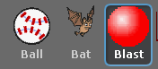

Scratch is developed by the Lifelong Kindergarten Group at the MIT Media Lab. See http://scratch.mit.edu
プレハブとインスタンス
ゲームオブジェクトのページで書いたように、「Ball」「Bat」「Blast(爆発)」の3つは「プレハブ」に相当します(図1)。
図1: プレハブ

ところがメソッドと同様に Scratch にはプレハブの概念が無いので、scratch2unity ではプログラムで擬似的にプレハブ機能を再現しています。
そのため本来の Unity は(メモリが許す限り)いくらでもインスタンスを作ることが出来ますが、scratch2unity では同時に1つしかインスタンスを作れないという制約があります。
具体的なインスタンス化の方法については演習を進めていきながら説明します。